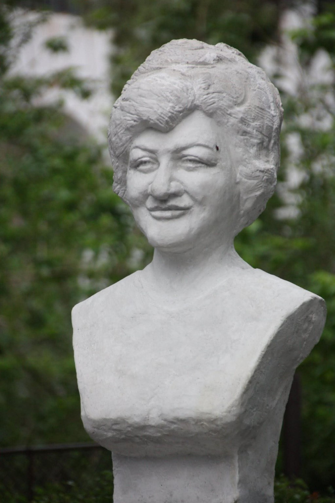
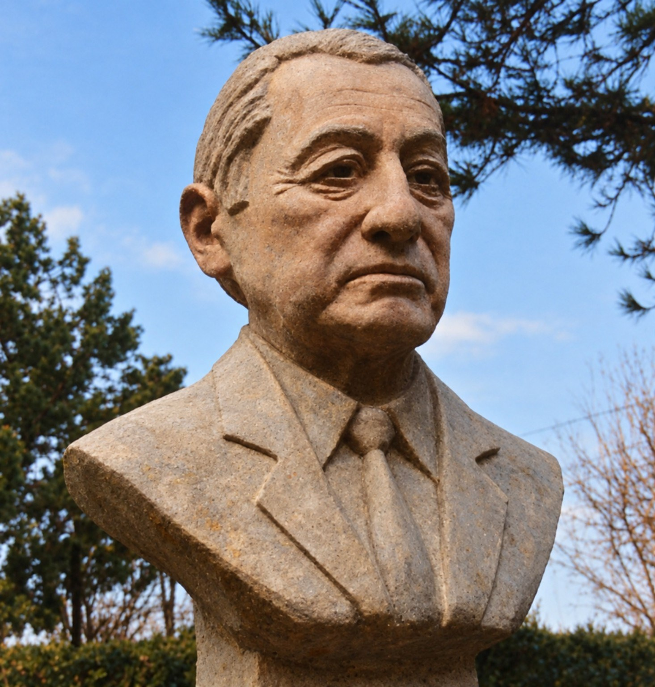

SCULPTURĂ
Sculptură la comandă, realizată cu finețe
Realizez sculpturi personalizate, cu atenție la detalii și finisaje de mare finețe. Pot fi busturi, portrete sau alte forme și idei propuse de client, în orice material, în funcție de cerințele proiectului. Pentru o lucrare la comandă, discutăm conceptul și detaliile înainte de realizare.

Ileana Constantinescu
Portret sculptural dedicat interpretei de muzică populară Ileana Constantinescu, realizat de Marcel Duțu. Bustul a fost dezvelit în septembrie 2015, la Drăgănești-Olt.

Traian Zorzoliu
Lucrare sculpturală realizată de Marcel Duțu.